Art credits
33 source photographs · Unsplash licence
Every sleeve in this concept is a real photograph, chosen from the Unsplash catalogue via
picsum.photos and stored locally under img/. The artists, albums, playlists and
shows are invented; the photographers below are not. Raw provenance for the whole candidate
set is kept at img/_sources.json, and every thumbnail on this page is served
from the img/_t/ cache of 200 px derivatives.
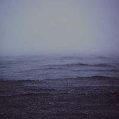
Yuriy Khimaninslow-tide · album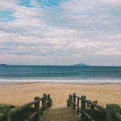
Beto Galettosaltglass · album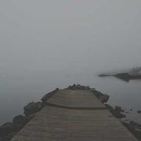
Aleksi Tappuraharbour-lights · EP- Andre Kochcold-storage · album
- Guillaumenocturne-field · album
- Vadim Sherbakovsignal-decay · album
- Steven Spassovblue-hour · album
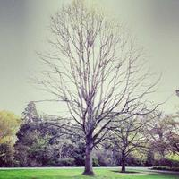
Kundan Ramisettipaper-rooms · album- Tiago Gerkenlong-way-down · album
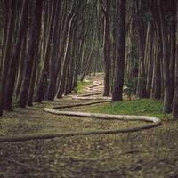
James Forbeswintering · album- Tim de Grootdune-song · album
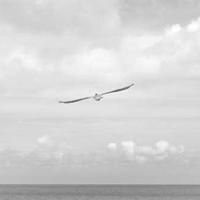
Ryan Jacquesnorthlight · album- Zugrfieldwork · album
- Matthew Skinnerhalcyon-street · album
- Adam Przewoskiterminal · album
- Gabe Rodriguezchrome-gospel · album
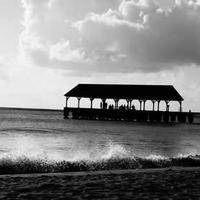
Mouly Kumarundertow · album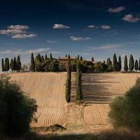
Anton Sulskylow-country · album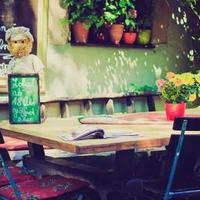
Linh Nguyenkestrel-single · single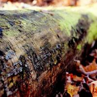
Chloe Benko-Prieurdiscover-weekly · playlist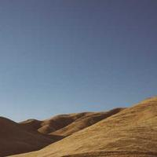
Greg Shieldrelease-radar · playlist- Danka & Peterfield-notes · podcast
- Dyaa Eldin Moustafalong-way-round · podcast
- Wojtek Witkowskirooftop-sessions · podcast
- Dietmar Beckertwo-cars · podcast
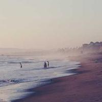
Christopher Sardegnavela-moreno · artist- Lukas Schweizernils-aker · artist
- petradrhana-so · artist
- Christopher Sardegnacoastal-divide · artist
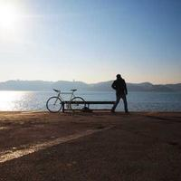
Diogo Tavaresmarta-isleif · artist- Charlie Fosterthe-rookery · artist
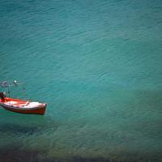
Anton Sulskywires-and-wolves · artist- Florian Klauerpale-harbour · artist